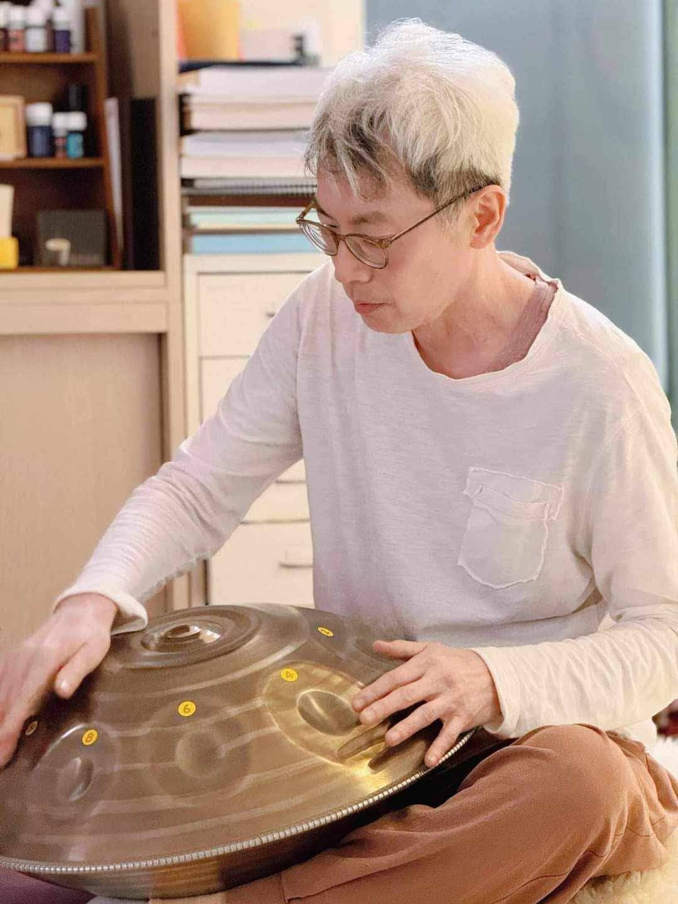

2004那年的一個契機，讓我踏入了身心靈領域，從「奧修」的靜心出發，開啟了深入且漫長的探索。 2008年更前往印度普那(Pune)，實踐了四個月的動態靜心，自此，「靜心」成為我生命中最重要的基石。
「我希望能成為一個管道，透過音樂與覺察，讓每個人都能找到自己生命中的定海神針。」
我們從身體出發，穿過情感與心智，最終回歸於自性之愛。
連結大地，釋放儲存在身體裡的壓力與負擔。
如水般流動，清理情緒的積壓，找回內在和諧。
透過律動，點燃生命火花，轉化停滯能量。
清明如風，開闊視野，打破慣性的思考模式。
進入靜止與永恆，體悟無條件的平安與愛。
近期動態與固定靜心活動，歡迎預約參與。
地點：桑德雅身心靈中心 | 打開身體的流動與能量
地點：永和社區大學 | 用頻率轉化心境
線上/實體同步 | 深度分享奧修靜心哲學